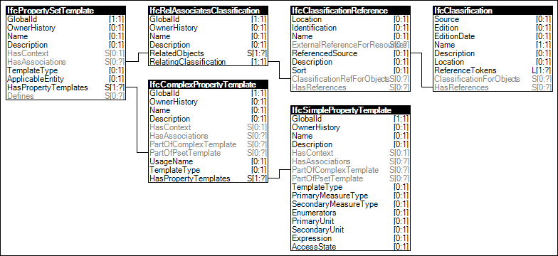

-
-
-
-
Structure for (0) to be described here by Team 1. The following classes from EN ISO 16739 shall be implemented to transport the product data templates.
-----------------------------------------------------------> REFERENCE IMG: Figure 4
Each element of the figures 2 corresponds to an element in ISO 16739. The documentation of ISO 16739 will not be repeated in this document. The following chapters describe the additional concepts and definitions for each element for the intended usage for product data.
Describe here the reference to the LOIN system.
In the IFC 4 documentation there are “Fundamental concepts and assumptions”. These are a set of classes, that can be used to fulfil a specific need, within the usage of IFC as a whole.
The following list contains a selection from the IFC 4 baseline concepts and assumption for expression a product data template.
On top of the existing baseline concepts and assumption in IFC 4 baseline, we define new, extended concepts and assumption for these concepts, that are not in IFC 4 baseline yet. These new, extended concepts have to work with the existing classes and properties of the IFC 4, ADD 2, TC 1 (4.0.2.1) schema.
Remark: The following table contains content, that was originally placed later on in the document. It was moved here because it makes more sense here, according to the new structure of the document.
| Classes of the Product Data View in alphabetical order |
Description | Template | Data |
|---|---|---|---|
| IfcClassification | Description of a classification system per ISO 12006-3-2015 (eg. Uniclass, Omniclass, VDI 2552-9 (wip)) |
||
| IfcClassificationReference | Description of hierarchical structures within a classification |
||
| IfcComplexProperty | Values of the complex property of a product (instance) with connection link to IfcComplexPropertyTemplate |
||
| IfcComplexPropertyTemplate | Template for the exact definition of multiple values for one property with connection Link to an external dictionary with a GUID as the key |
||
| IfcDocumentInformation | Metadata of a document that is embedded in the IFCZIP file (eg. PDF, Excel, Word, VDI3805, JPG, PNG, etc.) |
||
| IfcElementXX (eg.IfcDoor, IfcPump, IfcTransportElement) |
Base class for a product |
||
| IfcElementXXType (eg. IfcDoorType, IfcTransportElementType) |
Subclasses for product types (Per ISO 12006-2-2015: Type Of Classes) |
||
| IfcProject | Main project for the data part |
||
| IfcProjectLibrary | Main project library for thetemplate part |
||
| IfcPropertySet | Grouping properties for a well-defined aspect and attached to a product class with connection link to IfcPropertySetTemplate |
||
| IfcPropertySetTemplate | Template for grouping properties for a well-defined aspect and attached to a product class with connection Link to an external dictionary with a GUID as the key |
||
| IfcRelAggregates | Definition of hierarchical structures for the delivery of data for preassembled products, which are sold from the manufacturer as one product, eg. door systems containing several sub products like spare parts |
||
| IfcRelAssociatesClassification | Relation of the product to the classification system(s) |
||
| IfcRelAssociatesDocument | Relation of the document to a product or sub product |
||
| IfcSimpleProperty | Value of the property of a product (instance) with connection link to IfcSimplePropertyTemplate |
||
| IfcSimplePropertyTemplate | Template for the exact definition of an attribute of a product with connection Link to an external dictionary with a GUID as the key |
||
| UnitsInContext / IfcSIUnit | Definition of units for values of the attributes in templates and instances (e.g. kilogram, meter, watt, foot) |
Remark: The Table lists the basic classes, that are needed to describe a product within IFC. There are some other classes which are technical needed. These classes should be included in the official documentation of the \\\*\\\*“Product Data View”.\\\*\\\*
\\\*\\\*7.2.1 Specification “Header”\\\*\\\*The file starts with the declaration of the XML version 1.0 and the encoding UTF-8. Then follows the header section.
The header is structured as follows:
The Header contains the declaration of the metadata of the file according to this specification.
{ .tg}
Element/attribute |
content |
maximum length |
required? |
|---|---|---|---|
name |
filename without file extension |
255 |
yes |
time_stamp |
date and time at which the file was created. The date and time shall be inserted in the format ISO 8601. There shall be provided a value for the time zone. |
25 (ISO 8601) |
yes |
author |
name of person(s), that has/have created the file |
255 |
yes |
organization |
name of organization, that has created the file |
255 |
yes |
authorization |
name of person, that has validated and released the file |
255 |
yes |
originating_system |
name of application, that has created the file, including the version of the application |
255 |
yes |
preprocessor_version |
name of used IFC-Toolkit, including version of the toolkit |
255 |
no |
documentation |
URI to the technical documentation (tbd, optimal would be a GitHub repository) |
255 |
yes |
\\\*\\\*7.2.2 Relation to ISO 12006-3-based product data templates\\\*\\\*
Establish and publish a concept, how IFD (ISO 12006-3) and IFC (ISO 16739..) work seamlessly together (see the following figures)
Reference to the prEN 23387 here.
Differentiate between the technical discussions based on IFC 4, ADD 2 and the discussions about possible developments of IFC in the future (we need the support now, based on the published IFC version, ISO 16739). Concept for a connection between IFC and IFC
The mapping of IFC to IFC is based on these assumptions
Reference to the prEN 23386 here.
-----------------------------------------------------------> REFERENCE IMG: Figure 6: IFD and IFC work seamlessly together (eliminate the term bSDD here)
-----------------------------------------------------------> REFERENCE IMG: Figure 7:
-----------------------------------------------------------> REFERENCE IMG: Figure 8: Mapping of structures between structures in IFD (EN ISO 12006-3:2007 ) and IFC (EN ISO 16739).
{ .tg}
ISO 12006-3 |
IFC entity ISO 16739 |
Description of integration |
|---|---|---|
Classification Change to XTD notation of ISO 12006-3 |
IfcClassification IfcClassificationReference |
Classification systems and classification nodes based on a simple hierarchical classification as described in ISO 12006-2 |
subject |
IfcRelAssociatesClassification IfcElementXX IfcElementTypeXX |
Description of a single subject in a catalogue system and in an instance file |
nest |
IfcPropertySetTemplate |
A group of properties |
property |
IfcPropertyTemplate |
A single property |
measure |
EnumerationValues |
Information about the value of the property |
Unit* |
UnitsInContext / IfcSIUnit |
Technical definition of the unit, in which the value of the property should be interpreted |
bag |
? |
I am unsure, how to interpret a bag. Could this be an expression for a domain specific view? If yes, that it should be addressable in an MVDXML file (and not in an IFC file) |
Table 4: Mapping of entities
{ .tg}
ISO 12006-3 |
IFC property ISO 16739 |
Description of integration |
|---|---|---|
classification.guid |
IfcClassification.GlobalId IfcClassificationReference |
Add the optional attribute „GlobalId” in IfcClassification |
classification.guid |
IfcRelAssociatesClassification.GlobalId |
Add the optional attribute „GlobalId” in IfcRelAssociatesClassification |
measure.guid |
EnumerationValues. GlobalId |
Add the optional attribute „GlobalId” in EnumerationValues |
value.guid |
IfcLabel-wrapper.GlobalId |
Add the optional attribute „GlobalId” in IfcLabel-wrapper |
unit.guid |
IfcUnit.GlobalId (…) |
Add the optional attribute „GlobalId” in IfcUnit (and all other Unit classes) |
Table 5: Mapping of properties
\\\*\\\*7.2.3 Negotiation of the product data templates\\\*\\\*
Introduction here:
-----------------------------------------------------------> REFERENCE IMG: BIM product data exchange workflow
Open questions:
We are also discussing a possible workflow, how a template-based request for information can be answered by a structured IFC-file. Please look at the attached illustration of a possible workflow. In our meeting yesterday, the group discussed, if the BCF-format could be an envelope for this workflow. The main question was, if the transaction codes per property could be managed by BCF. We think about these four codes, that could be a possible answer per property for a request for information:
- NO, I do no not want to give you the requested value
- NO, I cannot give you the requested value
- I Do not understand you
- YES, I will give you the requested value
There is no possibility in BCF tor manager transaction codes per property with BCF.
Figure 2 illustrates an instance diagram.
|  |
Figure 2 — Data template |
| Entity | ||||
|---|---|---|---|---|
| IfcProjectLibrary | - - |
- - |
- - |
- - |
<?xml version="1.0"?>
<ConceptTemplate xmlns:xsi="http://www.w3.org/2001/XMLSchema-instance" xmlns:xsd="http://www.w3.org/2001/XMLSchema" uuid="d06bf192-fe82-443b-bda6-98f2049eb3dd" name="Data template" status="draft" applicableSchema="IFC4" applicableEntity="IfcPropertySetTemplate">
<Rules>
<AttributeRule AttributeName="HasPropertyTemplates">
<EntityRules>
<EntityRule EntityName="IfcComplexPropertyTemplate">
<AttributeRules>
<AttributeRule AttributeName="HasPropertyTemplates">
<EntityRules>
<EntityRule EntityName="IfcSimplePropertyTemplate" />
</EntityRules>
</AttributeRule>
</AttributeRules>
</EntityRule>
</EntityRules>
</AttributeRule>
<AttributeRule AttributeName="HasAssociations">
<EntityRules>
<EntityRule EntityName="IfcRelAssociatesClassification">
<AttributeRules>
<AttributeRule AttributeName="RelatingClassification">
<EntityRules>
<EntityRule EntityName="IfcClassificationReference">
<AttributeRules>
<AttributeRule AttributeName="ReferencedSource">
<EntityRules>
<EntityRule EntityName="IfcClassification" />
</EntityRules>
</AttributeRule>
</AttributeRules>
</EntityRule>
</EntityRules>
</AttributeRule>
</AttributeRules>
</EntityRule>
</EntityRules>
</AttributeRule>
</Rules>
</ConceptTemplate>
 Report an issue
Report an issue Link to this page
Link to this page